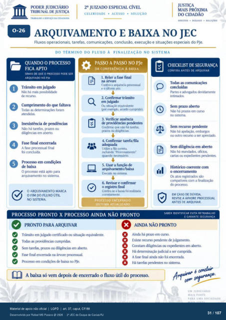

Transcrição automática em português, ainda não revisada. Confira grafia, prazos e termos jurídicos na imagem e no PDF antes de utilizar.
TRABALHO A sv.gv•tço DA CIDADANIA
CELERIDADE • ACESSO • SOLUÇÀO
• DIÁLOGO •
ARQUIVAMENTO E BAIXA NO JEC
Fluxos operacionais. tarefas, comunicações. conclusão, execução e situações especiais do PJe.
DO TÉRMINO DO FLUXO À FINALIZAÇÃO NO SISTEMA
QUANDO O PROCESSO
FICA APTO
SINAIS DE QUE O PR(XESSO PODE SER
ARQUIVADO NO Pie Trânsito em julgado
Não há mais v»sslbllidade de recurw.
Cumprimento do que faltava Tcxias as foram
atendidas. Não há tarefas, prazos ou
diligências em atvto. O
Fase final encerrada A fase prcxessual final
foi concluída. Pr«xesso em
O prcxesso está apto para arquivarnento no sistema.
O ARQUIVAMENTO MARCA
O FIM FLUXO ÚTIL
NO SISTEMA.
PASSO A PASSO NO PJe
DA CONFERÊNCIA À BAIXA
1. Reler a fase final
Confira a sequé1Yia prxxessual e 0 último ato.
2. Confirmar trânsito
em julgado Ou situação equivalente
(BI exernpb. acorch curnvkb).
3. Verificar
de providências Confirme que nào há tarefas,
prazcs ou diligências.
4. Confirmar tarefa/fila
adequada Utilize a fila correta.
incluinck) "Pr«ressamento- quando necessário.
5. Usar a função de
Execute sistema.
6. Revisar e confirmar
o registro final Confira se a baixa foi realizada
corretamente.
PROCESSO ENCERRADO.
SISTEMA ATUALIZADO.
PROCESSO PRONTO X PROCESSO AINDA NÃO PRONTO
CHECKI.IST DE SEGURANÇA
CONFIRA ANTES DE ARQUIVAR
Tcxlas as concluídas
Partes e advogados devidamente Não há prazos em curso
no sistema. Não há apelação. embargos
ou outro a ser arreciacb. Sem diligência em
Não há mandados, oficios, cartas ou F•ndentes.
Histórico «mente com o encerrarnento
Os atos registrados compatíveis com a
do prcxesw.
EM CASO DE DÚVIDA,
REVISE A ÁRVORE PROCESSUAL
ANTES DE ARQUIVAR.
SABER IDENTIFICAR EVITA RETRABALHO
E GARANTE SEGURANCA
e e
e
PRONTO PARA ARQUIVAR
Trânsito em julgado certificado ou situação «vivalente. Tcxias as providências cumpridas.
tarefas, ou diligências em Fase final encerrada na árvore prcxessual.
em de t*iixa no e
e e
o o
e
AINDA NÃO PRONTO
Ainda há prazo em Existe recur•M) julgamento.
Constam diligências ou ex}Rdientes em atrrto. Há determinação judicial a cunvida.
A fase final ainda não foi encerrada. Há tarefas vmdentes sistema.
A baixa só vem depois de encerrado o fluxo útil do prcxesso.
UM JUDICIARIO
MAIS FORTE
PARA UMA SOCIEDADE
Ver também o infográfico original (página 31)
